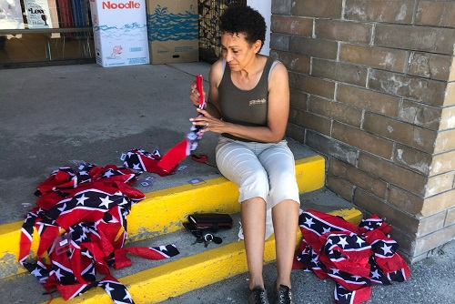

Three Anti-Whites Running for Office
CBC:
TDC_ARTICLE_START
How drive for equality and diversity inspired these 3 candidates of colour to run in the B.C. election
As questions of systemic racism, white privilege and the representation of Black, Indigenous and people of colour make their way into the B.C. election campaign, three candidates of colour — two of them entering provincial politics for the first time — reflect on what motivated them to run in a snap election during a global pandemic.
TDC_ARTICLE_STOP
Stop, stop. This is already both stupid and anti-white. “Candidates of colour.” WTF is that? I know they mean brown people, but it’s just hilarious the language these anti-white propagandists uses. Honestly sometimes I have to try to stay mad at these people, they really are vicious clowns.
TDC_ARTICLE_START
Nazanin Moghadami, B.C. Greens, Vancouver-Kensington
Three years ago, Nazanin Moghadami was at the event of a provincial candidate when something occurred to her.
"I was in their rally and I was clapping for them, and then I just realized that I'm tired of standing up and cheering for middle aged, very privileged, white men," she said.
"And I was like, maybe I can run."
It's okay if Zionist Jews rape and murder my people. FUCK YOU WHITEY!
Moghadami, who moved to Canada from Iran in 2005, says people of colour often face barriers to entering politics. Many are too busy trying to make a living, looking after families, and upgrading credentials to properly engage in politics, she said.
Moghadami has no experience in politics. She is also aware of how her racial background and being a woman could make her a target, given she has received hateful emails before.
But Mogahdami says she is not afraid to speak up.
"I want little girls who are second-generation or immigrants to look at me and say, 'Well, someone with an accent can run,'" she said.
"Someone who makes mistakes with their grammar and their English can run. Someone who isn't born here can run. Someone who's a Muslim can run."
Given her experience as a trauma counsellor working with survivors of gender-based violence and domestic abuse, Moghadami says her platform is about helping those who are marginalized.
She also says she will advocate for policies, laws and bylaws that will address systemic racism in institutions such as health care and education.
TDC_ARTICLE_STOP
Imagine being an Iranian running for office, but your issue isn’t “I want these Zionist Jews trying to start a war with Iran and kill my people to go to jail for hate speech.” That’s not your issue. That’s all fine and dandy.
No, what’s really important is “fuck white people.”
TDC_ARTICLE_START
Toni Boot, B.C. NDP, Penticton
Earlier in the summer, Summerland Mayor Toni Boot made headlines when she spoke out in support of an Indo-Canadian family whose home was vandalized and painted with a swastika and vulgar graffiti.
Boot also made national news later, when she confronted the owner of a local shop that sold Confederate flag bandanas. With reporters present, she ripped the bandanas into pieces.
This is from when she terrorized the white dollar store owner.
Months later, as the NDP candidate for Penticton, Boot finds she is still being asked questions about that incident while on the campaign trail.
"Overwhelmingly, there has been support, but there has been some backlash," she said.
"Although it hasn't been enjoyable by any stretch, I think it's really important for leaders to lead and even if that puts them in a place of criticism or it makes them feel vulnerable — and certainly that's how I have experienced some of the feedback — I think it's really important to stand by your values and your principles."
Growing up as a Black child in Summerland — a predominantly white town — Boot says she encountered small-minded views and racism.
Even when she ran for Summerland council six years ago, someone painted a racist slur on one of her election signs.
Now that she's running for a provincial seat, Boot says she will continue to speak out against racism, especially because she's received dozens of emails in the past few months from people sharing their stories of racial discrimination.
"There's a lot of fear out there and so I think it's really important to do that work," she said.
"I think things are changing. I'm hopeful that they will continue changing for the better. I know that more people are understanding how much more enriched their lives and their communities are when you have diversity — whether it's ... spiritual diversity or if it's diversity from heritage or from cultural backgrounds that differ from the white background."
TDC_ARTICLE_STOP
Sort of run of the mill anti-whitism. But Boot is actually worse than you think. I’ve been trying to find more information about her husband, Steve, but I can’t find much. Toni Boot herself is childless, and she acts like a combination of an anti-white shaniqua combined with a typical childless cuntess.
I really do need to do a writeup on her little stunt, where she terrorized a white dollar store owner because he was selling confederate flag bandanas. It’s truly breathtaking, but I don’t want to spoil anything.
TDC_ARTICLE_START
Rishi Sharma, B.C. Liberals, Saanich-South
Growing up in Saanich-South, Rishi Sharma said he avoided recognizing himself as a person of colour. Instead, he tried to assimilate to move ahead.
He started working as a legislative assistant when he was 18, and he has been a public servant for the past 20 years.
Having run in the same riding in the 2013 provincial election — when he lost out to incumbent Lana Popham of the NDP — he decided to run again in 2020 after a friend approached him to get involved.
Possible gayface detected
TDC_ARTICLE_STOP
Just like Toni Boot, this guy is “the victim” of a massively suspicious anti-white Smollet. BTW when I say Smollett, I mean like Jussie, the gay black jew who claimed that Nigerian KKK members in klan robes and a MAGA hat poured bleach on his face and also had a noose outside of Subway at 2:30 in the morning in Downtown Vancouver.
It doesn’t have to make sense goy, in fact, it’s funnier this way.
Smollett memes, at least on DuckDuckGo are fucking hilarious.
Anway, the long and short is that he and his brown brother claimed that when they were putting up election signs some white man and his wife came up to them, apropos of nothing goy, and said “East Indians are dumb.” Big if true. Also really funny if true. This is one of those stories where you know it’s fake, but you wish it weren’t just because if some guy really came up to two Brown Guys putting up election signs and said “yeah, (pregnant pause) Brown people are dumb. LOLOLOL. (drives away tires screeching.” That shit would be fucking hilarious, although only because he was putting up an NDP sign.
TDC_ARTICLE_START
"I've never wanted to go out and say, 'Hey, let's talk about equity, let's talk about diversity,' because ... I just felt people wouldn't want to hear it," he said.
But now that conversations about systemic racism are at the forefront, Sharma says issues around race and diversity have come up during the campaign.
"Like one of the candidates said when they were asked about racial discrimination in society, they talked about how they don't see colour," he said.
"I know that's not an appropriate saying now, because of the work that I've done in equity and diversity. So I quickly responded and said, 'Well, please do see my colour, acknowledge my colour, respect my colour, and love my colour.'"
Though the B.C. Legislature — a predominantly white institution — has become more inclusive in recent years, Sharma says there is still room for improvement.
"I think it's the unconscious bias you need to really deal with, from stories about not putting Indian food in the microwave because people can't stand it and they want you to leave. It's hurtful," he said.
If elected, Sharma says he would become the first person of colour to represent Saanich-South.
As an MLA, Sharma says he would want "an equity, diversity and inclusion lens on every piece of legislation and policy that goes through," and that he would prioritize hiring more Indigenous and people of colour, as well as equity pay for women.
TDC_ARTICLE_STOP
See, this is exactly the point at which the Cuckservative would, in response to this anti-whitism, say something like “well I also believe in equality and true colourblindness and blah blah.” Then the anti-white would respond with “you don’t know the struggle that coloured of peopleness like myself has been lived experiences blah blah.” And the cuckservative would then shut up and be owned.
Instead, I’ll just call this racial discrimination against white people, and make sure that everyone in his riding knows that a vote for him is a vote to hurt white people. The unfortunate part, and why cuckold servatism really exists, is because those people are paid very handsomely to throw the fight.
We’ve got to get organized, and the metrics for my site look great, so it’s on me to make this happen.